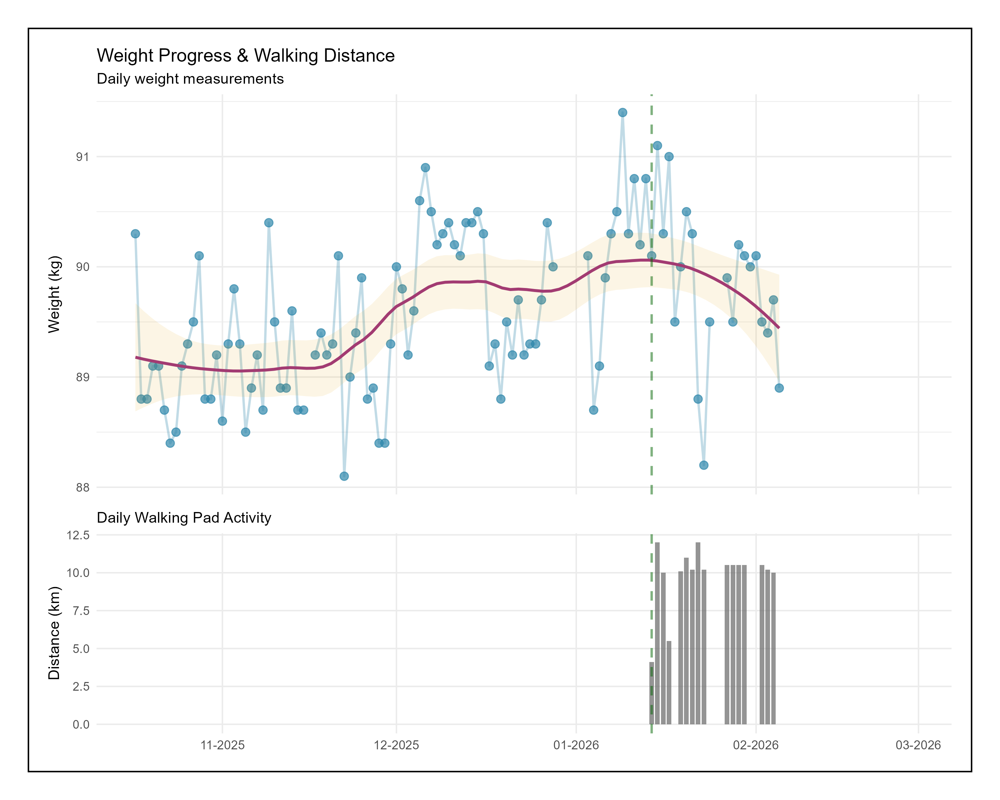

ggplot2
1. Panel plot with common axes

Snippet
library(tidyverse)
library(readxl)
library(janitor)
library(patchwork)
# --- 1. Data Prep ---
data <- read_excel('waga.xlsx') |>
clean_names() |>
mutate(data = as.Date(data)) |> #important, otherwise datetime
filter(data < '2026-03-01')
# Get first walking date for reference line
first_walking_date <- data %>%
filter(!is.na(kilometry_na_biezni)) %>%
slice(1) %>%
pull(data)
# Common X-axis limits to ensure perfect alignment
date_limits <- range(data$data)
shared_x_scale <- scale_x_date(
limits = date_limits,
date_breaks = "1 month", # Major grid lines (thick)
minor_breaks = NULL,
date_labels = "%m-%Y", # Label format (e.g., Jan-2026)
name = NULL # Hide axis title (we'll set it manually if needed)
)
# --- 2. Top Plot: Weight (Line + Points) ---
p_weight <- ggplot(data, aes(x = data, y = waga_kg)) +
# Geoms
geom_point(color = "#2E86AB", size = 2.5, alpha = 0.7) +
geom_line(color = "#2E86AB", linewidth = 0.8, alpha = 0.3) +
geom_smooth(method = "loess", span=0.6, color = "#A23B72", fill = "#E09A01"
, alpha = 0.1, linewidth = 1.0) +
# Vertical line for context
geom_vline(xintercept = as.numeric(first_walking_date),
linetype = "dashed", color = "darkgreen", linewidth = 0.8, alpha=0.5) +
# Scales & Theme
scale_y_continuous(name = "Weight (kg)") +
shared_x_scale + # Lock x-axis
labs(title = "Weight Progress & Walking Distance",
subtitle = "Daily weight measurements") +
theme_minimal() +
theme(
axis.title.x = element_blank(), # Remove x-label from top plot
axis.text.x = element_blank(), # Remove x-axis dates from top plot (optional, or keep them)
plot.margin = margin(b = 5) # Reduce bottom margin to bring plots closer
)
# --- 3. Bottom Plot: Walking Distance (Bar Chart) ---
p_distance <- ggplot(data, aes(x = data, y = kilometry_na_biezni)) +
# Geoms
geom_col(fill = "grey40", alpha = 0.7, width = 0.8) + # Using geom_col is fine now!
# Vertical line alignment
geom_vline(xintercept = as.numeric(first_walking_date),
linetype = "dashed", color = "darkgreen", linewidth = 0.8, alpha = 0.5) +
# Scales & Theme
scale_y_continuous(name = "Distance (km)", position = "left") + # Put axis on right
shared_x_scale +
labs(subtitle = "Daily Walking Pad Activity") +
theme_minimal() +
theme(
panel.grid.minor = element_blank(),
plot.margin = margin(t = 5), # Reduce top margin
# --- NEW: Bigger X-Axis Text ---
axis.text.x = element_text(size = 9)
)
# 1. Create the combined plot as usual (clean, no border yet)
combined_plot <- (p_weight / p_distance) +
plot_layout(heights = c(2, 1), axes = "collect") +
plot_annotation(
theme = theme(
plot.background = element_rect(color = "black", linewidth = 1, fill = NA),
# Inner padding (space between plots and the border)
plot.margin = margin(15, 15, 15, 15)
)
)
# 2. Wrap it to add the floating border
final_with_border <- wrap_elements(combined_plot) +
theme(
# The Border
# Outer Margin (Space between border and file edge)
plot.margin = margin(20, 20, 20, 20)
)
print(final_with_border)
ggsave("weight_progress_v1.png", plot = final_with_border,
width = 10, height = 8, dpi = 300, bg = "white")